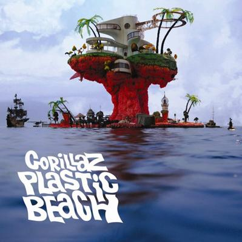
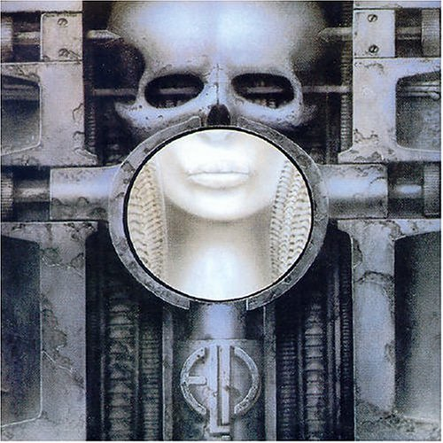
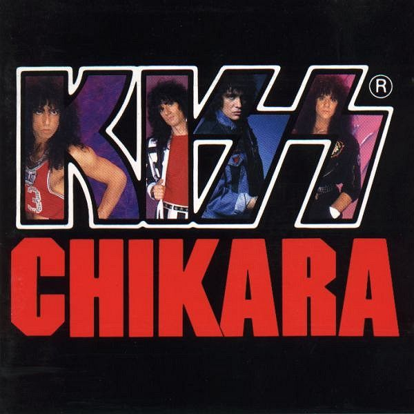

DR Examples
|

Album: Plastic Beach
Artist: Gorillaz
|
| |
| |
| DR | Peak | RMS | Duration | Title |
| DR11 | -0.00 dB | -16.14 dB | 1:08 | 01 - Orchestral Intro [mp3] |
| DR7 | -0.00 dB | -9.15 dB | 3:35 | 02 - Welcome To The World Of The Plastic Beach [mp3] |
| DR12 | -0.00 dB | -13.42 dB | 3:43 | 03 - White Flag [mp3] |
| DR13 | -0.00 dB | -13.90 dB | 3:20 | 04 - Rhinestone Eyes [mp3] |
| DR7 | -0.00 dB | -7.73 dB | 4:30 | 05 - Stylo [mp3] |
| DR6 | -0.00 dB | -7.92 dB | 2:55 | 06 - Superfast Jellyfish [mp3] |
| DR12 | -0.00 dB | -16.55 dB | 4:43 | 07 - Empire Ants [mp3] |
| DR3 | -0.00 dB | -3.55 dB | 4:02 | 08 - Glitter Freeze [mp3] |
| DR5 | -0.00 dB | -6.48 dB | 2:59 | 09 - Some Kind Of Nature [mp3] |
| DR9 | -0.00 dB | -10.22 dB | 3:53 | 10 - On Melancholy Hill [mp3] |
| DR7 | -0.05 dB | -7.80 dB | 3:16 | 11 - Broken [mp3] |
| DR10 | -0.00 dB | -11.08 dB | 5:19 | 12 - Sweepstakes [mp3] |
| DR9 | -0.00 dB | -11.90 dB | 3:46 | 13 - Plastic Beach [mp3] |
| DR11 | -0.02 dB | -12.26 dB | 3:54 | 14 - To Binge [mp3] |
| DR8 | -0.00 dB | -10.60 dB | 3:10 | 15 - Cloud Of Unknowing [mp3] |
| DR12 | -0.00 dB | -13.76 dB | 2:31 | 16 - Pirate Jet [mp3] |
| Number of files: 16 |
| Official DR value: DR9 |
| | | | |
| Sampling rate: 44100 Hz |
| Average bitrate: 320kbs |
| Bits per sample: 16 bit |
|
Album: The Wall (CD1) MFSL
Artist: Pink Floyd
|
| DR | Peak | RMS | Duration | Title |
| DR11 | -1.73 dB | -18.76 dB | 3:21 | 01 - In The Flesh? [flac] |
| DR14 | -2.45 dB | -22.36 dB | 2:24 | 02 - The Thin Ice [flac] |
| DR13 | -0.88 dB | -19.58 dB | 3:45 | 03 - Another Brick In The Wall - Part 1 [flac] |
| DR13 | -0.81 dB | -19.09 dB | 1:20 | 04 - The Happiest Days Of Our Lives [flac] |
| DR15 | -1.80 dB | -19.79 dB | 4:00 | 05 - Another Brick In The Wall - Part 2 [flac] |
| DR16 | -1.62 dB | -22.93 dB | 5:29 | 06 - Mother [flac] |
| DR10 | -9.82 dB | -24.30 dB | 2:52 | 07 - Goodbye Blue Sky [None] |
| DR11 | -3.29 dB | -22.94 dB | 2:03 | 08 - Empty Spaces [flac] |
| DR15 | -1.25 dB | -19.46 dB | 3:29 | 09 - Young Lust [flac] |
| DR15 | -2.08 dB | -24.67 dB | 3:36 | 10 - One Of My Turns [flac] |
| DR14 | -4.92 dB | -23.52 dB | 4:16 | 11 - Don't Leave Me Now [flac] |
| DR16 | -1.76 dB | -22.11 dB | 1:42 | 12 - Another Brick In The Wall - Part 3 [flac] |
| DR8 | -15.27 dB | -30.50 dB | 0:45 | 13 - Goodbye Cruel World [flac] |
| Number of files: 13 |
| Official DR value: DR13 |
| | | | |
| Sampling rate: 44100 Hz |
| Average bitrate: 691kbs |
| Bits per sample: 16 bit |
|
Album: Young Team
Artist: Mogwai
|
| DR | Peak | RMS | Duration | Title |
| DR12 | -1.00 dB | -20.93 dB | 5:57 | 0 - Yes! I Am A Long Way From Home [alac] |
| DR11 | -0.10 dB | -14.98 dB | 16:19 | 1 - Mogwai Fear Satan [alac] |
| DR12 | -0.10 dB | -16.32 dB | 11:41 | 2 - Like Herod [alac] |
| DR12 | -0.10 dB | -15.09 dB | 5:24 | 3 - Katrien [alac] |
| DR12 | -12.37 dB | -29.92 dB | 1:35 | 4 - Radar Maker [alac] |
| DR13 | -0.93 dB | -20.52 dB | 7:19 | 5 - Tracy [alac] |
| DR12 | -0.10 dB | -16.72 dB | 3:28 | 6 - Summer (Priority Version) [alac] |
| DR7 | -1.10 dB | -15.15 dB | 3:10 | 7 - With Portfolio [alac] |
| DR12 | -0.10 dB | -19.62 dB | 7:20 | 8 - R U Still In 2 It [alac] |
| DR10 | -1.49 dB | -14.30 dB | 2:18 | 9 - A Cheery Wave From Stranded Youngsters [alac] |
| Number of files: 10 |
| Official DR value: DR11 |
|
| Sampling rate: 44100 Hz |
| Average bitrate: 801kbs |
| Bits per sample: 16 bit |
|  |
| Emerson Lake And Palmer - Brain Salad Surgery |
| DR | Peak | RMS | File name |
| DR11 | -0.77 dB | -13.02 dB | 01-emerson_lake_and_palmer-jerusalem.flac |
| DR12 | -0.00 dB | -13.84 dB | 02-emerson_lake_and_palmer-toccata.flac |
| DR12 | -1.75 dB | -17.87 dB | 03-emerson_lake_and_palmer-still_you_turn_me_on.flac |
| DR12 | -2.27 dB | -15.74 dB | 04-emerson_lake_and_palmer-benny_the_bouncer.flac |
| DR12 | -0.13 dB | -11.72 dB | 05-emerson_lake_and_palmer-karn_evil_9_1st_impression_(part_1).flac |
| DR11 | -0.59 dB | -11.99 dB | 06-emerson_lake_and_palmer-karn_evil_9_1st_impression_(part_2).flac |
| DR13 | -2.19 dB | -17.27 dB | 07-emerson_lake_and_palmer-karn_evil_9_2nd_impression.flac |
| DR11 | -1.38 dB | -13.63 dB | 08-emerson_lake_and_palmer-karn_evil_9_3rd_impression.flac |
| Number of files: 8 |
| Official DR value: 12 |
|  |
| Kiss - Chikara (1988) (Japan Only Release ) |
| DR | Peak | RMS | File name |
| DR12 | -1.98 dB | -13.12 dB | 01 Kiss - Rock And Roll All Nite.flac |
| DR11 | -3.66 dB | -14.14 dB | 02 Kiss - Detroit Rock City.flac |
| DR12 | -1.01 dB | -13.33 dB | 03 Kiss - Love Gun.flac |
| DR13 | -1.68 dB | -13.35 dB | 04 Kiss - I Was Made For Lovin' You (Extended Version).flac |
| DR12 | -1.40 dB | -12.30 dB | 05 Kiss - Creatures Of The Night.flac |
| DR12 | -2.69 dB | -13.43 dB | 06 Kiss - I Love It Loud.flac |
| DR12 | -1.80 dB | -13.07 dB | 07 Kiss - War Machine.flac |
| DR12 | -1.78 dB | -13.30 dB | 08 Kiss - Lick It Up.flac |
| DR13 | -0.00 dB | -14.08 dB | 09 Kiss - All Hell's Breakin' Loose.flac |
| DR11 | -3.86 dB | -13.58 dB | 10 Kiss - Heaven's On Fire.flac |
| DR10 | -3.08 dB | -12.94 dB | 11 Kiss - Thrills In The Night.flac |
| DR12 | -1.70 dB | -12.23 dB | 12 Kiss - Who Wants To Be Lonely.flac |
| DR13 | -1.20 dB | -13.77 dB | 13 Kiss - Uh! All Night.flac |
| DR12 | -1.22 dB | -12.59 dB | 14 Kiss - Tears Are Falling.flac |
| Number of files: 14 |
| Official DR value: 12 |
|
| David Garrett - 2008 - Encore |
| DR | Peak | RMS | File name |
| DR7 | -0.09 dB | -5.65 dB | 01 - David Garrett - Smooth Criminal.ape |
| DR5 | -0.09 dB | -7.36 dB | 02 - David Garrett - Who Wants To Live Forever.ape |
| DR11 | -0.32 dB | -12.23 dB | 03 - David Garrett - Clair du Lune.ape |
| DR6 | -0.01 dB | -6.20 dB | 04 - David Garrett - He's A Pirate.ape |
| DR10 | -0.23 dB | -10.89 dB | 05 - David Garrett - Summertime.ape |
| DR8 | -0.17 dB | -7.09 dB | 06 - David Garrett - Hungarian Dance No.5.ape |
| DR10 | -0.27 dB | -11.55 dB | 07 - David Garrett - Chelsea Girl.ape |
| DR5 | -0.01 dB | -3.97 dB | 08 - David Garrett - Summer.ape |
| DR8 | -0.22 dB | -10.10 dB | 09 - David Garrett - O Mio Babbino Caro.ape |
| DR9 | -0.16 dB | -7.99 dB | 10 - David Garrett - Air.ape |
| DR6 | -0.01 dB | -5.96 dB | 11 - David Garrett - Thunderstruck.ape |
| DR9 | -0.26 dB | -9.94 dB | 12 - David Garrett - New Day.ape |
| DR9 | -0.22 dB | -7.90 dB | 13 - David Garrett - Ain't No Sunshine.ape |
| DR8 | -0.06 dB | -7.92 dB | 14 - David Garrett - Rock Prelude.ape |
| DR11 | -3.27 dB | -14.75 dB | 15 - David Garrett - Winter Lullaby.ape |
| DR13 | -0.18 dB | -13.48 dB | 16 - David Garrett - Zorba's Dance.ape |
| Number of files: 16 |
| Official DR value: 8 |
|
| Wolfgang Amadeus Mozart - Requiem K626 - Jordi Savall |
| DR | Peak | RMS | File name |
| DR13 | -1.17 dB | -17.13 dB | 01 Maurerische Trauermusik for orchestra in C minor (Masonic Funeral Music), K. 477 (K. 479a).flac |
| DR12 | -0.17 dB | -13.45 dB | 02 Requiem for soloists, chorus, and orchestra, K. 626- Requiem aeternam - Kyrie.flac |
| DR10 | -0.15 dB | -9.88 dB | 03 Requiem for soloists, chorus, and orchestra, K. 626- Dies irae.flac |
| DR14 | -0.86 dB | -20.27 dB | 04 Requiem for soloists, chorus, and orchestra, K. 626- Tuba mirum.flac |
| DR13 | -0.19 dB | -14.18 dB | 05 Requiem for soloists, chorus, and orchestra, K. 626- Rex tremendae.flac |
| DR14 | -0.26 dB | -19.55 dB | 06 Requiem for soloists, chorus, and orchestra, K. 626- Recordare.flac |
| DR13 | -0.32 dB | -17.29 dB | 07 Requiem for soloists, chorus, and orchestra, K. 626- Confutatis.flac |
| DR12 | -0.22 dB | -14.74 dB | 08 Requiem for soloists, chorus, and orchestra, K. 626- Lacrimosa.flac |
| DR13 | -0.21 dB | -14.60 dB | 09 Requiem for soloists, chorus, and orchestra, K. 626- Domine Deus.flac |
| DR12 | -0.47 dB | -15.08 dB | 10 Requiem for soloists, chorus, and orchestra, K. 626- Hostias.flac |
| DR10 | -0.19 dB | -10.46 dB | 11 Requiem for soloists, chorus, and orchestra, K. 626- Sanctus.flac |
| DR14 | -0.21 dB | -16.33 dB | 12 Requiem for soloists, chorus, and orchestra, K. 626- Benedictus.flac |
| DR12 | -0.23 dB | -14.37 dB | 13 Requiem for soloists, chorus, and orchestra, K. 626- Agnus Dei - Lux aeterna.flac |
| Number of files: 13 |
| Official DR value: 12 |
|
|